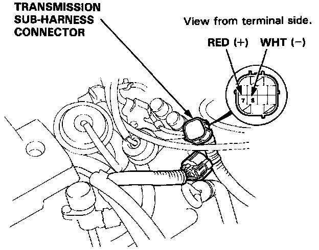
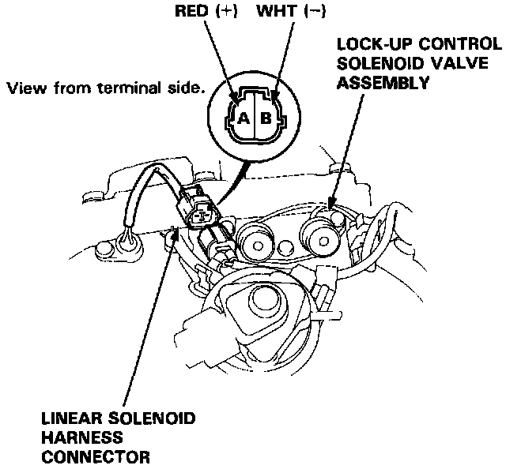

Component Test
Linear Solenoid Test1. Disconnect the transmission sub-harness connector.

2. Measure the resistance between the No. 7 and No. 8 terminals of the transmission sub-harness.
STANDARD: 5.0 - 5.6 ohms (at 20°C, 70°F)
3. If the resistance is out of specification, disconnect the transmission sub-harness from the linear solenoid harness.

4. Measure the resistance between the A and B terminals of the linear solenoid harness.
5. Replace the transmission sub-harness if the resistance is within specification.
6. Replace the linear solenoid if the resistance is out of specification.
7. Connect the A terminal of the linear solenoid connector to the battery positive terminal and connect the B terminal to the battery negative terminal. A clicking sound should be heard.
8. If not, replace the linear solenoid. (See Throttle Valve Body/Linear Solenoid Replacement.)